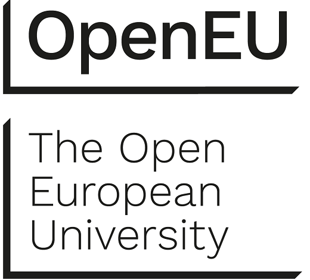
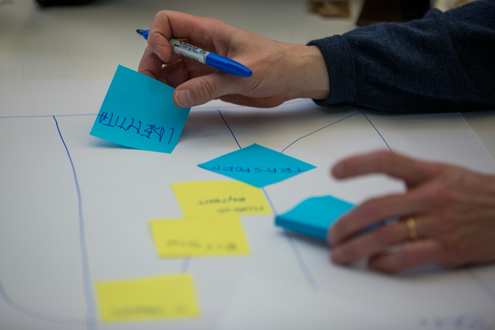

Change that lasts.
The people who put change into practice every day help shape it. That builds commitment, and your university can still act decisively as the pressure to change grows.
<mark> (round 2, S3).<ul>
<li>Your university … there is <mark>no shared strategy</mark> that …</li>
<li>…</li>
</ul>I support your university in getting change moving, and in developing ways of working that sustain it.
Do you sense that something needs to change at your university? It often shows in situations like these:
subgrid-3 (shape · H3 · text), so all texts start at the same height (round 2, S5).Parent container › Layout: Grid › 3 or 4 columns
Each card container › Layout: Grid › CSS Classes: subgrid-3SVG · gain card shapes (set rounded diamond colour #67888B in the widget)
<svg xmlns="http://www.w3.org/2000/svg" viewBox="0 0 24 24" width="24" height="24"><rect width="24" height="24" fill="#02383E"/></svg>
<svg xmlns="http://www.w3.org/2000/svg" viewBox="0 0 24 24" width="24" height="24"><path d="M12 0 24 12 12 24 0 12Z" fill="#3DB7BB"/></svg>
<svg xmlns="http://www.w3.org/2000/svg" viewBox="0 0 24 24" width="24" height="24"><rect x="4.5" y="4.5" width="15" height="15" rx="3" transform="rotate(45 12 12)" fill="#3DB7BB"/></svg>
<svg xmlns="http://www.w3.org/2000/svg" viewBox="0 0 24 24" width="24" height="24"><circle cx="12" cy="12" r="12" fill="#008080"/></svg>
The people who put change into practice every day help shape it. That builds commitment, and your university can still act decisively as the pressure to change grows.
Everyone knows who is responsible for what and who decides what. Less time goes into coordination, and friction decreases.
Responsibility is shared, mistakes are discussed rather than hidden, and teams work together in a more flexible way. This takes pressure off and supports staff wellbeing.
You test new formats and processes on a small scale first and learn from what emerges. Only then do you embed them across the whole organisation.
I know the friction between governing bodies, administration and academic staff first-hand: from sitting on the senate and the Research and Knowledge Transfer Committee at the UOC, and from building an alliance in which ten universities had to align their ways of working. As a senior consultant at joyn-coop, I guided organisational development processes. I bring this experience to my work with your university.
I’m a certified organisational developer and I work systemically: I see your university as a web of people, structures and relationships that all influence one another. I complement this with Theory U, ideas from Frédéric Laloux’s Reinventing Organizations and agile ways of working. More on my methods.
I work with the people who shape your university every day, through your existing committees and teams. No parallel structures.
Change at universities often takes time. I stay with you, even when the path isn’t straight.
I design and guide change processes that the people involved help shape from the start. This ranges from a close look at the current situation to anchoring the change in practice. I use formats that make participation practical and keep the process moving.
I support institutes, research centres and university alliances that are reorganising or want to clarify roles and responsibilities. Starting from your vision and your challenges, we develop principles for working together. We test these in small experiments before translating them into roles and structures.
I design and facilitate important meetings, workshops and events that are meant to be more than a series of presentations. In these formats, the knowledge of all participants comes into play, whether you need to reach a decision or bring together many different perspectives. Your time together produces concrete proposals and results you can build on.
Whether you want to start a change process, clarify roles and responsibilities or work together in a more agile way: in a free introductory call, we explore what you need and what kind of support makes sense.
Let’s talksubgrid-2 (line above names aligned).case-card__logo--photo) · Post Title H3 · Excerpt · Button "Read the full case study".Quotes container › Layout: Grid › columns: repeat(auto-fit, minmax(300px, 1fr))
Each quote container › Layout: Grid › CSS Classes: subgrid-2Those of us who have worked alongside Nadja, shoulder to shoulder, know that she’s someone who transforms everything around her.

As Director Europe and Open Knowledge at the Universitat Oberta de Catalunya, I led the creation of the OpenEU Alliance, a European Universities alliance which today brings together ten universities, most of them open and distance universities. We developed shared governance, clarified roles and responsibilities between the partner universities and established ways of working that allowed teams from different countries and university cultures to collaborate.
I have used the same approach with other complex, multi-stakeholder organisations. Two examples from my time as a senior consultant at joyn-coop:

The German Platform for the Reconstruction of Ukraine, an initiative of the German Federal Government, brings together companies, municipalities, civil society and academia to strengthen Germany’s contribution to rebuilding Ukraine. As a senior consultant at joyn-coop, I supported the platform’s secretariat with organisational development and process facilitation for over a year, on behalf of GIZ and the BMZ. This included agile ways of working for the distributed team, participatory network events, prototyping workshops and coaching. The platform has since introduced new formats and new ways of working together.

A European climate foundation realigned its vision, values, culture, processes and decision-making in a “Fit for Future” process. As a senior consultant at joyn-coop, I supported the core team at the Foundation in designing the process and facilitated groups of 15 to 35 people. For the Foundation’s leadership team, I developed a programme to help them put the new mission statement into practice, with training and coaching on decision-making, roles and self-reflection.
At universities, agility doesn’t mean bypassing governing bodies. It means taking decisions at the right level: what needs to be decided in the senate, and what can teams settle themselves? Clear roles, short feedback loops and trying out new approaches on a small scale make universities more responsive. Participation doesn’t decrease. It becomes more targeted. Committees deal with the questions that are truly theirs to decide and receive better-prepared proposals.
Start by looking closely at how your university actually works before you settle on solutions. Change that lasts comes from a direction developed together, not from a strategy imposed from above or from outside. Involve the people who shape change in day-to-day work, using formats that draw on the knowledge of many. It’s important to say clearly from the start who has a say in what, and who decides what.
Traditional change management usually plans change top-down, in fixed phases from analysis to roll-out, and relies on communication to get people on board. At universities, this approach soon hits its limits: decisions are made in committees, and many of the people involved can’t simply be told what to do. Systemic organisational development involves the people who carry out the change from the start, tries out new approaches on a small scale and adjusts the path as it goes. That turns change at universities into a shared learning process.
In Reinventing Organizations, Frédéric Laloux describes organisations built on self-management, wholeness and a shared sense of purpose (more on my methods). Universities have a long tradition of academic self-governance. In administration and between units, however, rigid hierarchies and fixed lines of responsibility often prevail. Laloux’s ideas offer a way to rethink collaboration there: with distributed responsibility, clear roles instead of rigid job descriptions, and decisions close to the work.
Theory U is a model for change processes in individuals and organisations, developed by Otto Scharmer at MIT. Applied to a university, it involves three movements. First, we look closely at how the institution actually works, beyond its official structures. Then we develop a shared intention for the future that grows out of the needs of the institution and the people who shape it. Finally, we try out new formats and processes on a small scale before embedding them more widely. That way, the university itself owns the change.
Every collaboration looks different, from a single workshop to longer-term support. In a free introductory call, we get to know each other and see whether working together feels right for you. Then we clarify what you need, identify the people who should be involved and agree on a shared goal. I then send you a proposal with a timeline and cost estimate.
Last updated: